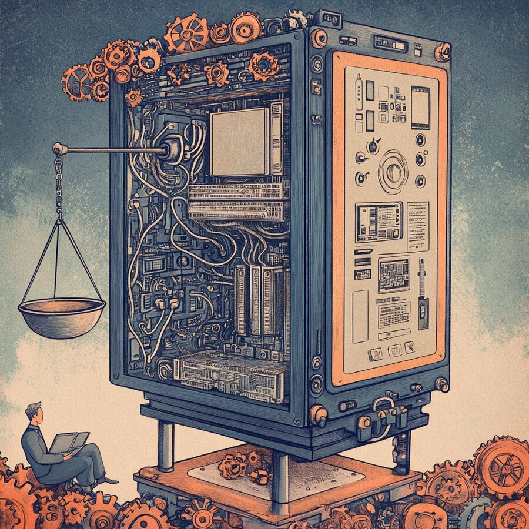
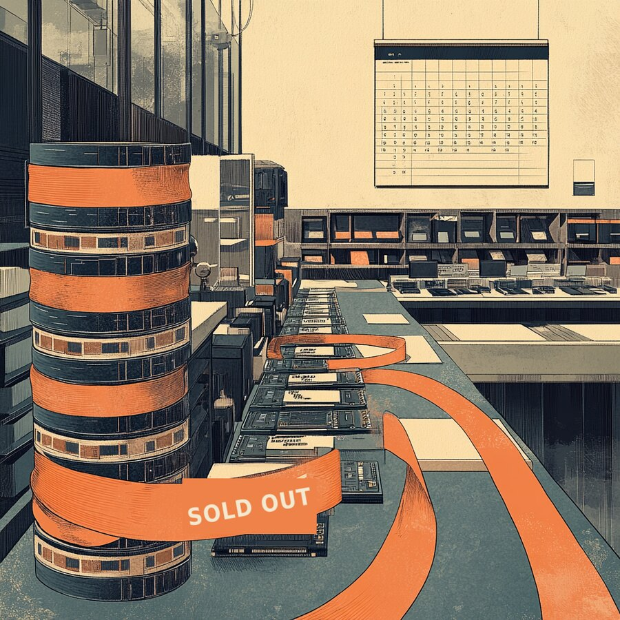
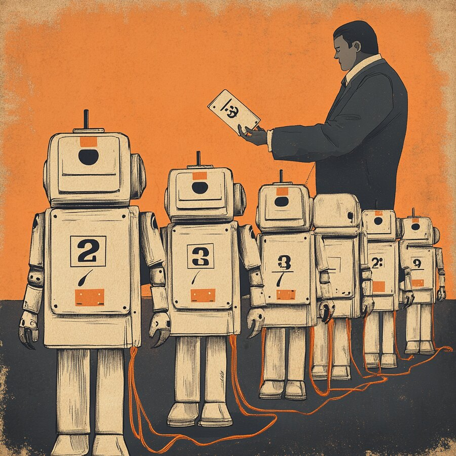

The Signal
| THE THANKSGIVING LEDGER | GRATITUDE, FOR TECHNOLOGY LEADERS |
| IN THIS ISSUE |
MARKETS Anthropic’s $1.5T IPO, the biggest ever | SILICON The chip race stops selling chips — and starts selling systems | MEMORY The quiet bottleneck is sold out to 2029 | EMERGING TECH Intel buys its way to a full quantum stack |
CS
Get it in your inbox
Subscribe free — a new edition weekly |
ENTERPRISE SOFTWARE Your newest workforce is AI — and unmanaged | IDENTITY & ACCESS Every AI agent now needs its own ID | CYBERSECURITY The machines started finding the bugs | COMPUTE & DEMAND Nvidia’s record quarter — and the wobble |
A rule in Washington became a stop-work order in a Taiwan fab.
On November 19 the United States redrew the chip map again — and this time it reached straight into the foundry. A new Bureau of Industry and Security rule, “Addressing Remote Access to Advanced Semiconductors,” narrowed the ways a contract manufacturer can prove an advanced chip is outside U.S. control, flipping the presumption: advanced logic is now assumed to be controlled unless a licence or exception applies. The response was immediate and concrete. TSMC — the company that physically makes most of the world’s leading-edge silicon — moved to halt orders at the 16-nanometer node and below from Chinese customers unless they obtain a U.S. export licence, and Samsung suspended some shipments while it applies for licences of its own. In a stroke, a line drawn in Washington became a stop-work order in Hsinchu.
The lesson for any leader whose business runs on hardware — which is every leader — is that your supply chain now has a second set of rules written by governments, not markets, and those rules can change the availability, price and legality of components in days, not quarters. “16nm” is not a detail for your procurement team to worry about; it is a reminder that the chips inside your servers, devices and products sit on a geopolitical fault line, and that a rule change an ocean away can reroute who is allowed to build what.
Our read. Treat export-control and supply-chain exposure as a standing board-level risk, not a once-a-year compliance memo. Three moves. Map your silicon dependency — honestly: which of your products, vendors or cloud providers depend on leading-edge parts, and from whose fab? Build optionality where you can — qualify second sources, hold strategic buffer stock for the components that gate your roadmap, and read your suppliers’ own geographic exposure, not just their price. And watch the policy, not just the market: the next constraint on what you can build or sell may arrive as a rule, not a shortage. The companies that treat geopolitics as a first-order input will keep shipping while competitors wait on a licence.
| 1 MARKETS | IPO · AI ECONOMY |
The largest public offering in history values an AI lab that is losing money by the tens of billions — a bet on where the business goes, not where it is.
On November 18, AI lab Anthropic priced its IPO at $83 a share — above its $70–78 range — raising about $81 billion and valuing the company near $1.5 trillion (fully diluted; roughly $1.1T undiluted). Shares began trading on Nasdaq under ANT on November 19. It is, by the raise, the largest IPO on record, edging past SpaceX’s. The context that matters: Anthropic also disclosed a ~$104 billion net loss over nine months — though $94B of that is a non-cash accounting charge tied to the rising value of convertible financing, not operating burn. Investors bought the growth story, not the current P&L.
Our read. You don’t need to own the stock for this to matter to you. First, it is a confidence signal — public markets just put a trillion-and-a-half-dollar price on frontier AI, which means the capital to build models, data centers and chips keeps flowing, and the vendors you buy AI from are now scrutinised, liquid and under quarterly pressure to show returns. Second, it is a concentration signal: an enormous share of the AI economy’s value now sits in a handful of names whose valuations assume years of flawless growth, so a stumble at one of them ripples into pricing, roadmaps and availability across everyone who builds on them. The practical move is the same one this briefing keeps returning to: ride the capability, but keep your commitments staged and portable so a repricing in any single AI supplier is a headline you read, not an outage you absorb. A record valuation is a measure of expectations, not a guarantee they’ll be met.
| 2 SILICON | STRATEGY · SYSTEMS |
The AI-silicon fight is shifting from the fastest part to the most complete system — and that changes what you’re really buying, and how hard it is to leave.
This week crystallised a shift analysts have watched build all year: the AI chip contest is moving from who has the fastest accelerator to who sells the most complete system — silicon, interconnect, networking, software and support as one integrated stack. The reads: AMD is pressing a system-level challenge to Nvidia’s full-stack ecosystem (its purchase of inference-chip startup Taalas, ~$2.9B, closed Nov 17), and Amazon reportedly agreed to buy Decart’s AI chip-optimization software (~$7.5B) to squeeze more out of its own Trainium and Inferentia silicon. The common thread is vertical integration: the value is migrating from the chip to the system around it.
Our read. Integrated systems are genuinely better — tuned silicon, networking and software deliver performance and efficiency a bag of parts can’t — but “better together” is also how lock-in is built. When you buy a system rather than a chip, you inherit that vendor’s interconnect, its software, its roadmap and its pricing power, and the cost of leaving rises with every layer you adopt. Two moves. First, when you evaluate AI infrastructure, price the whole system and the exit, not the headline chip spec — what does it cost to move a workload off this stack in two years? Second, keep a portability layer (open formats, abstraction, containerised workloads) between your business and any single vendor’s integrated stack, so you can capture the efficiency without marrying the supplier. The winners of the system era will be vendors; the winners among buyers will be the ones who kept their options open.

| 3 MEMORY & HARDWARE | SUPPLY · BOTTLENECK |
The scarcest thing in AI isn’t the processor — it’s the high-bandwidth memory stacked beside it, and the makers say it’s spoken for through the decade.
While attention fixes on GPUs, the real constraint on AI systems is high-bandwidth memory (HBM) — the stacked DRAM that feeds an accelerator fast enough to keep it busy. This week the memory makers moved to add capacity: SK Hynix is reportedly planning at least 20,000 more HBM wafers a month (new packaging and test tooling, targeted for 2027), Samsung is pushing toward roughly 250,000 wafers/month, and Micron is ramping its custom HBM4 line. The headline that should focus any planner: SK Hynix says its DRAM and HBM are essentially sold out through 2029. The thing gating the AI build-out isn’t compute — it’s the memory next to it, and it’s committed for years.
Our read. A multi-year sell-out of a critical component is a planning fact, not a tech-trivia footnote, and it has three consequences you can act on. First, price: when supply is spoken for, the cost of AI hardware (and the cloud capacity built on it) stays elevated and volatile — budget for that rather than assuming the usual price declines. Second, lead times: if your roadmap depends on new AI capacity, the queue is measured in years at the memory layer, so commit early or design around what you can actually get. Third, concentration: HBM is made by essentially three companies, which is a supply-chain risk sitting underneath nearly every AI vendor you use — worth knowing even if you never buy a wafer. The unglamorous memory layer is quietly setting the pace, and the price, of the entire AI economy.

| 4 EMERGING TECH | QUANTUM · M&A |
Intel is acquiring quantum software to pair with its own qubit hardware — a bet that owning the whole stack, fab included, is how you win a race that’s still years out.
Intel agreed to acquire Classiq, a Tel Aviv quantum-software company (reported ~$2.3B; terms undisclosed, expected to close 1H2027), to turn its Quantum Computing Group into a full-stack business: Classiq’s algorithm-synthesis software layered over Intel’s silicon spin-qubit hardware. The logic echoes the week’s silicon theme (see Silicon): own the whole stack, not just one piece. Intel’s distinct card is its foundry — it can, in principle, make the qubit chips itself. Classiq’s software stays hardware-agnostic, keeping support for other vendors’ quantum machines. Analysts note the obvious caveat: practical, fault-tolerant quantum computing remains years away, and no full-stack quantum bet has yet paid off.
Our read. For nearly every enterprise, quantum is still watch-and-learn, not a budget line — and anyone pitching “quantum-ready” products today is mostly selling a story. But two things make it worth a leader’s attention now. First, the industry is consolidating toward full-stack platforms, which is the pattern that eventually produces usable products — a signal the field is maturing from physics experiment toward engineering roadmap. Second, and far more practically, quantum progress is what turns “harvest now, decrypt later” into a real planning concern: adversaries can capture your encrypted data today and decrypt it once the machines arrive, so anything that must stay secret for ten-plus years argues for starting the migration to post-quantum cryptography (the NIST-standardised algorithms) on long-lived secrets now. You don’t need a quantum computer to act — you need to know which of your data has a long enough shelf life to care.
| 5 ENTERPRISE SOFTWARE | AGENTS · GOVERNANCE |
Enterprises are discovering they already run hundreds of AI agents they never catalogued — and a wave of ‘agent control plane’ products arrived this week to govern them.
The quiet enterprise story of the week is agent sprawl: organisations are finding they already operate dozens or hundreds of AI agents — built by different teams, running in different clouds, holding real credentials — that appear on no inventory. Vendors rushed to meet it. Microsoft’s Agent 365 expanded discovery of local and cloud agents and added lifecycle controls (register, approve, suspend, revoke), explicitly framing “shadow AI” as an enterprise risk class. Appian extended an agent control plane (registration, activity and cost monitoring, policy controls), and Genpact launched Onyx for building and governing enterprise agents. The theme is unmistakable: the industry has stopped asking whether to deploy agents and started asking how to manage the ones already running.
Our read. If your organisation has been experimenting with AI — and it has — you almost certainly have agents in production that no single person can list, each one an identity with access, a cost line and a potential failure mode. Treat them like what they are: a workforce. Three moves. Discover and inventory every agent, including the ones built quietly inside business units (the “shadow AI” the tools are now designed to surface). Govern the lifecycle — who approved it, what it can access, what it costs, and how you turn it off — the same questions you’d ask about a contractor. And watch the spend: autonomous agents consume tokens and compute on their own initiative, and unmonitored, that is a budget leak as much as a security one. The pilot phase is over; the management phase — governance, identity (see next) and cost control — is the real work, and it’s starting now.
| 6 IDENTITY & ACCESS | AGENT IDENTITY · SECURITY |
If agents are your new workforce, identity is how you control them — and the model that’s emerging is a scoped, revocable ID for every agent, tied to an accountable person.
The security counterpart to agent sprawl (see Enterprise Software) is a fast-maturing discipline: non-human identity. The emerging blueprint, pushed this period by Okta and echoed across the identity vendors, treats every AI agent as a first-class identity — discovered, given scoped, short-lived credentials, and governed with runtime authorization on every tool call rather than a standing key handed over once. Crucially, the model carries an accountable human through the whole chain of agent-to-agent calls, so there is always a person answerable for what an autonomous agent did. Okta extended this to support non-Okta identity providers and new agent ecosystems; the broader point is that identity, not the network perimeter, is becoming the control surface for the agent era.
Our read. The dangerous shortcut is to let agents inherit a human’s credentials or run on a shared, long-lived service account — convenient today, untraceable tomorrow, and impossible to revoke cleanly when one misbehaves. Three principles to adopt now, before your agent count climbs further. One identity per agent: every agent gets its own identity, not a borrowed one, so you can see and control each individually. Least privilege, short-lived, revocable: scope each agent’s access to exactly what it needs, issue credentials that expire, and keep the ability to cut one off instantly. And accountable human in the loop: every agent traces back to a person who owns it, because “the AI did it” is not an answer your auditors, regulators or customers will accept. The identity perimeter just grew a non-human population — govern it with the same rigor you apply to employees, or it becomes the softest way into everything they can reach.

| 7 CYBERSECURITY | AI-DRIVEN DEFENSE · FRONTIER |
AI systems just began discovering unknown software flaws at a scale and speed no human team can match — a genuine leap for defenders, and the same gift for attackers.
Something changed in security research this month, and it is not a patch — it is a capability. OpenAI released GPT-6 Cyber, a model purpose-built to find and fix exploitable flaws; in testing it surfaced 81 previously unknown high-severity vulnerabilities in Firefox and enabled 948 Linux privilege-escalation exploits through an autonomous pipeline (rolling out to vetted partners — Cisco, Mozilla, Palo Alto Networks — via a “Daybreak Red” program). Separately, Forescout’s AI-assisted research found 99 flaws (66 of them zero-days) across ten TCP/IP stacks and cut the analysis from nine months to 90 hours. And the U.S. GAO published a formal assessment (Nov 20) of how AI both magnifies attacks and strengthens defense. Machine-speed vulnerability discovery has arrived.
Our read. This is the most important security shift of the quarter, and it cuts both ways. For defenders, it is a gift: the same tools can find and fix flaws in your own code and dependencies far faster than a human team, and the vendors you buy software from can harden their products before shipping — expect, and ask for, AI-assisted security testing in your suppliers’ development. For attackers, it is the same gift pointed the other way: the cost and time to discover a working exploit just collapsed, which means the window between a flaw existing and a flaw being weaponised keeps shrinking toward zero. Two moves follow. Compress your own patch and detection cycle — if bugs can be found at machine speed, they can be exploited at machine speed, and a 30-day patch window is now a liability. And ask your vendors what they’re doing with these tools — the software you depend on should be getting the defender’s version of this capability, not waiting for the attacker’s. The era where finding a zero-day took a skilled human months is ending; plan your defenses for the era where it takes a machine a weekend.
| 8 COMPUTE & DEMAND | EARNINGS · SIGNAL |
Nvidia posted the best numbers in its history and the stock still slipped — a lesson in the difference between a great result and a great reaction.
Nvidia reported record quarterly results on November 19 — data-center revenue again at all-time highs on relentless AI demand — and yet the shares slid afterward, part of a jittery stretch for AI names. Nothing about the business broke; the reaction was about expectations and concentration. When a single company’s results stand in for the health of the entire AI trade (and when its own leadership and valuation have been in the headlines), investors scrutinise every line for a reason to worry about the pace of spending continuing. A record quarter met a market already asking “how long can this last?” — and the answer, for now, is uncertainty priced as volatility.
Our read. Most leaders don’t trade the stock, so the lesson isn’t in the number — it’s in the gap between the result and the reaction. That gap is the market pricing concentration risk: an enormous amount of confidence, capital and vendor roadmaps now rests on one company’s chips and one category’s spending continuing at a pace that cannot stay vertical forever. You felt the same risk in this issue’s hero (a supply chain one rule can reroute) and in the AI-economy valuations (Markets). You can’t diversify away from Nvidia, but you can refuse to inherit its leverage: keep AI commitments staged against milestones rather than locked in at today’s prices, keep workloads portable, and judge your own AI spend on a measurable return — not on the assumption that because the whole market is spending, the spending must be safe. Watch the earnings reaction as a barometer; manage the concentration it reveals every week.
| THE THROUGH-LINE | ACROSS ALL EIGHT LAYERS |
| IN MARKET | NEW PRODUCTS THIS WEEK |
| ON THE RADAR | EVENTS & CONFERENCES |
| PARTNER DESK | PARTNER SPOTLIGHT · ROTATES EACH ISSUE |
| ABOUT CYBERSAINYA | DIGITAL TRANSFORMATION PARTNER |
CyberSainya is a digital transformation partner. We help organizations turn IT, security, and AI from sources of risk into engines of growth — complexity made simple. That means clear strategy, the right technology, and a partner who stays in the room long after the decision is made: advisory and consulting, security and IT assessments, executive workshops, and hands-on execution. Through our AI products division, CernoGlobus, we build practical, security-by-design AI that puts enterprise-grade protection behind everyday automation.